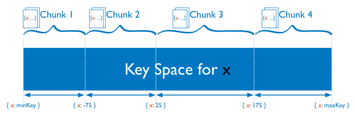
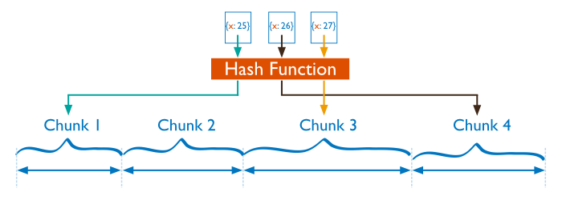

Mongo Sharding + GridFS
By Josh Fermin
What is Sharding?
Storing data across multiple nodes/machines.
A single machine may run out of storage or have bottlenecked reads and writes
Sharding is horizontally scalable - Add machines as demand increases.
Database Issues
High throughput and large amounts data put a lot of stress on a single server.
Set sizes larger than RAM stress I/O capacity
High query rates can exhuast CPU capacity of a single server.
Two Solutions
- Vertical Scaling:
- Add more CPU and storage resources to a single server
- Limitations: Expensive.
- Sharding (Horizontal Scaling):
- Distribute data set over multiple servers or shards
- Each shard is an independent db and all together they make up a single logical db.
Sharded Collection

Sharding in MongoDB

Data Partitioning
Sharding happens on a collection level.
Sharding divides a collection's data by a shard key
Two types of partitioning: range based and hash based
Ranged Based Paritioning
Hash Based Paritioning
Mongo Sharding Tutorial
Taken from Mongo Docs.
Fire Up Config Server
Download Mongo heremkdir /data/configdbmongod --configsvr --dbpath /data/configdb- data/configdb is where server metadata will be stored
- In production, run configsvr on three different hosts
Setup Mongos - Routing Service
mongos --configdb localhost:27019 --port 27017- Lightweight, do not require data directories
- Usually have two of these in production
Create DBs for Shards
mkdir /data/shard1mongod --dbpath /data/shard1 --port 27018 --shardsvr- This starts a standalone mongod instance
Create another Shard
mkdir /data/shard2mongod --dbpath /data/shard2 --port 27020 --shardsvr- Data will be partitioned to these two shards, based on shard key
Fire up mongos shell
mongo --port 27017mongos> sh.addShard("localhost:27018"){ "shardAdded": "shard0001", "ok" : 1 }
mongos> sh.addShard("localhost:27020"){ "shardAdded": "shard0002", "ok" : 1 }
Sharding on DB/Collection Level
First create a database and a collection:
mongos> use testDBmongos> db.createCollection(testCollection)
Then enable sharding on each:
Second param is choosing the shard key as md5 with hash partitioning. For range based do: "md5":1mongos> sh.enableSharding(“testDBShard”)mongos> sh.shardCollection(“testDB.testCollection”, { “md5”:”hashed” })